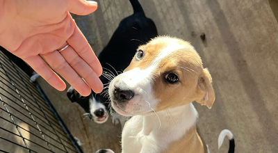

ELIGE
Revisa perfiles, servicios, disponibilidad y reseñas.
Miles de cuidadores de confianza te esperan. Empieza hoy mismo.
Encontrar cuidadorRevisa perfiles, servicios, disponibilidad y reseñas.
Solicita el servicio y disfruta de la tranquilidad de saber que tu mascota está bien cuidada.
Una persona de confianza para cuidar de ella cuando tú no puedas, con la atención que se merece.
